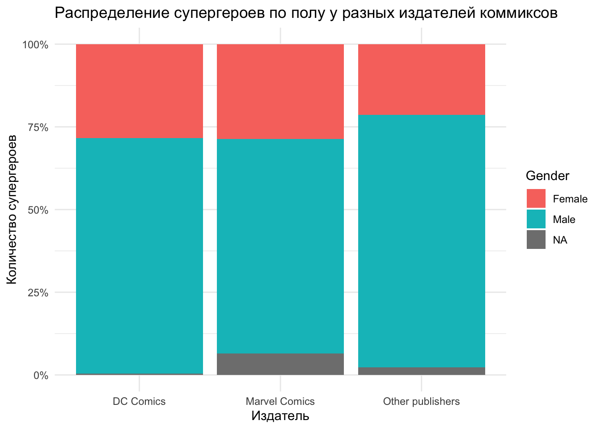
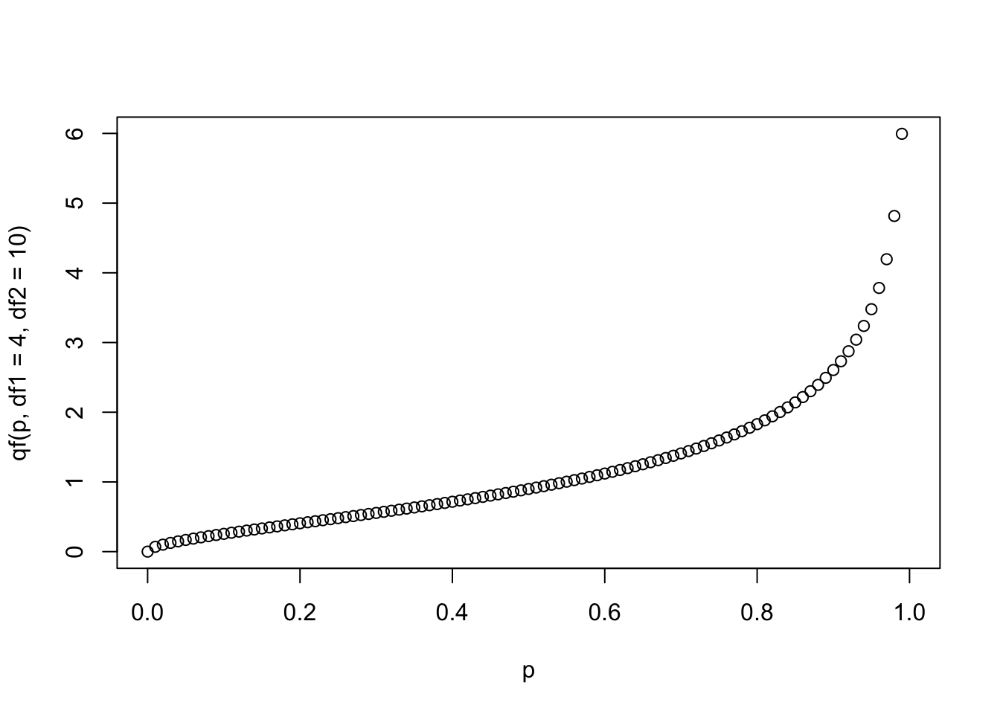
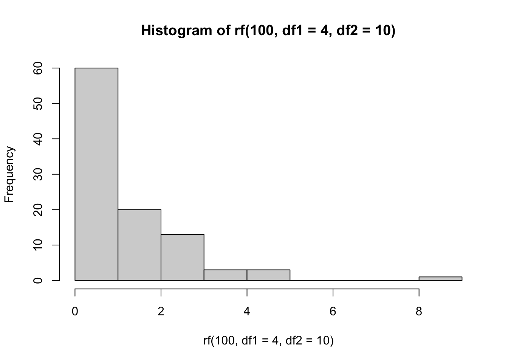

9801/9[1] 1089И.С. Поздняков ![]()
Задания, которые помечены звездочкой (*) можно пропускать: это задания повышенной сложности, в них требуется подумать над решением, а не просто применить выученные инструменты.
9801/9[1] 1089log(2176782336, 6)[1] 12log(10)*5[1] 11.51293sin() посчитайте \(\sin (\pi), \sin \left(\frac{\pi}{2}\right), \sin \left(\frac{\pi}{6}\right)\).Значение \(\pi\) - зашитая в R константа (
pi).
sin(pi)[1] 1.224647e-16sin(pi/2)[1] 1sin(pi/6)[1] 0.5c(2, 30, 4000)[1] 2 30 40001:20 [1] 1 2 3 4 5 6 7 8 9 10 11 12 13 14 15 16 17 18 19 2020:1 [1] 20 19 18 17 16 15 14 13 12 11 10 9 8 7 6 5 4 3 2 1Функция sum() возвращает сумму элементов вектора на входе. Посчитайте сумму первых 100 натуральных чисел (т.е. всех целых чисел от 1 до 100).
sum(1:100)[1] 5050c(1:20, 19:1) [1] 1 2 3 4 5 6 7 8 9 10 11 12 13 14 15 16 17 18 19 20 19 18 17 16 15
[26] 14 13 12 11 10 9 8 7 6 5 4 3 2 1c(5:2, 2:5)[1] 5 4 3 2 2 3 4 5seq(2, 20, 2) [1] 2 4 6 8 10 12 14 16 18 20seq(0.1, 1, 0.1) [1] 0.1 0.2 0.3 0.4 0.5 0.6 0.7 0.8 0.9 1.02100 год относится к XXI веку, а не к XXII.
seq(2020, 2100, 4) [1] 2020 2024 2028 2032 2036 2040 2044 2048 2052 2056 2060 2064 2068 2072 2076
[16] 2080 2084 2088 2092 2096 2100rep("Хэй!", 20) [1] "Хэй!" "Хэй!" "Хэй!" "Хэй!" "Хэй!" "Хэй!" "Хэй!" "Хэй!" "Хэй!" "Хэй!"
[11] "Хэй!" "Хэй!" "Хэй!" "Хэй!" "Хэй!" "Хэй!" "Хэй!" "Хэй!" "Хэй!" "Хэй!"sqrt() и сохраните результат в векторе roots. Выведите содержание вектора roots в консоль.roots <- sqrt(1:10)
roots [1] 1.000000 1.414214 1.732051 2.000000 2.236068 2.449490 2.645751 2.828427
[9] 3.000000 3.162278rep(1:9, 1:9) [1] 1 2 2 3 3 3 4 4 4 4 5 5 5 5 5 6 6 6 6 6 6 7 7 7 7 7 7 7 8 8 8 8 8 8 8 8 9 9
[39] 9 9 9 9 9 9 9vec1, в котором соедините 3, а также значения "Мой" и "вектор".vec1 <- c(3, "Мой", "вектор")
vec1[1] "3" "Мой" "вектор"TRUE из 10.10 - TRUE[1] 910 и TRUE в вектор vec2.vec2 <- c(10, TRUE)
vec2[1] 10 1vec2 и значение "r":c(vec2, "r")[1] "10" "1" "r" 10, TRUE, "r" в вектор.c(10, TRUE, "r")[1] "10" "TRUE" "r" p, состоящий из значений 4, 5, 6, 7, и вектор q, состоящий из 0, 1, 2, 3.p <- 4:7
p[1] 4 5 6 7q <- 0:3
q[1] 0 1 2 3p и q:p + q[1] 4 6 8 10p и q:p - q[1] 4 4 4 4p на соответствующий ему элемент вектора q:О, да, Вам нужно делить на 0!
p / q[1] Inf 5.000000 3.000000 2.333333p в степень соответствующего ему элемента вектора q:p ^ q[1] 1 5 36 343p на 10.p * 10[1] 40 50 60 70(1:10)^2 [1] 1 4 9 16 25 36 49 64 81 1001:20 * 0:1 [1] 0 2 0 4 0 6 0 8 0 10 0 12 0 14 0 16 0 18 0 201:20 * 1:0 [1] 1 0 3 0 5 0 7 0 9 0 11 0 13 0 15 0 17 0 19 02 ^ (1:20) [1] 2 4 8 16 32 64 128 256 512
[10] 1024 2048 4096 8192 16384 32768 65536 131072 262144
[19] 524288 104857610 ^ (0:4)[1] 1 10 100 1000 10000sum(1 / (1:50 * 2:51))[1] 0.9803922sum(1 / 2 ^ (0:20))[1] 1.999999sum((3 * (1:10) - 2) / 3 ^ (0:9))[1] 3.749174sum((3 * (1:10) - 2) / 3 ^ (0:9) > 0.5)[1] 3troiki со значениями 3, 6, 9, …, 24, 27.troiki <- seq(3, 27, 3)
troiki[1] 3 6 9 12 15 18 21 24 27troiki.troiki[c(2, 5, 7)][1] 6 15 21troiki.troiki[length(troiki) - 1][1] 24troiki кроме предпоследнего:troiki[-(length(troiki) - 1)][1] 3 6 9 12 15 18 21 27Создайте вектор vec3, скопировав следующий код:
vec3 <- c(3, 5, 2, 1, 8, 4, 9, 10, 3, 15, 1, 11)vec3.vec3[2][1] 5vec3.vec3[c(2, 5)][1] 5 8vec3:vec3[100][1] NAvec3 кроме второго элемента.vec3[-2] [1] 3 2 1 8 4 9 10 3 15 1 11vec3 кроме второго и пятого элемента.vec3[c(-2, -5)] [1] 3 2 1 4 9 10 3 15 1 11vec3.vec3[length(vec3)][1] 11vec3 кроме первого и последнего.vec3[c(-1, -length(vec3))] [1] 5 2 1 8 4 9 10 3 15 1vec3, которые больше 4.vec3[vec3 > 4][1] 5 8 9 10 15 11vec3, которые больше 4, но меньше 10.Если хотите сделать это в одну строчку, то вам помогут логические операторы!
vec3[vec3 > 4 & vec3 < 10][1] 5 8 9vec3, которые меньше 4 или больше 10.vec3[vec3 < 4 | vec3 > 10][1] 3 2 1 3 15 1 11vec3.vec3 ^ 2 [1] 9 25 4 1 64 16 81 100 9 225 1 121vec3.Извлечение корня - это то же самое, что и возведение в степень 0.5.
vec3 ^ c(2, 0.5) [1] 9.000000 2.236068 4.000000 1.000000 64.000000 2.000000 81.000000
[8] 3.162278 9.000000 3.872983 1.000000 3.316625seq(2, 20, by = 2) [1] 2 4 6 8 10 12 14 16 18 20(1:20)[c(FALSE,TRUE)] [1] 2 4 6 8 10 12 14 16 18 20(1:10)*2 [1] 2 4 6 8 10 12 14 16 18 20(1:20)[1:20 %% 2 == 0] [1] 2 4 6 8 10 12 14 16 18 20vec4 со значениями 300, 15, 8, 2, 0, 1, 110, скопировав следующий код:vec4 <- c(300, 15, 8, 20, 0, 1, 110)
vec4[1] 300 15 8 20 0 1 110vec4, которые больше 20 на NA.vec4[vec4 > 20] <- NAvec4:vec4[1] NA 15 8 20 0 1 NAvec4 с помощью функции sum(). Ответ NA не считается!sum(vec4, na.rm = TRUE)[1] 44M1.M1 <- matrix(rep(1, 16), ncol = 4)
M1 [,1] [,2] [,3] [,4]
[1,] 1 1 1 1
[2,] 1 1 1 1
[3,] 1 1 1 1
[4,] 1 1 1 1M1 (то есть значения на позициях [2,2], [2,3], [3,2] и [3,3]) на число 2.M1[2:3, 2:3] <- 2
M1 [,1] [,2] [,3] [,4]
[1,] 1 1 1 1
[2,] 1 2 2 1
[3,] 1 2 2 1
[4,] 1 1 1 1M1.M1[,2:3] [,1] [,2]
[1,] 1 1
[2,] 2 2
[3,] 2 2
[4,] 1 1==) вторую колонку и вторую строчку матрицы M1.M1[,2] == M1[2,][1] TRUE TRUE TRUE TRUEM2 из пяти строк и шести столбцов, в которой будут записаны значения от 1 до 30 (сверху вниз, затем слева направо):M2 <- matrix(1:30, ncol = 6)
M2 [,1] [,2] [,3] [,4] [,5] [,6]
[1,] 1 6 11 16 21 26
[2,] 2 7 12 17 22 27
[3,] 3 8 13 18 23 28
[4,] 4 9 14 19 24 29
[5,] 5 10 15 20 25 30M2 все значения (в виде матрицы) кроме значений из третьей строки и второго столбца.M2[-3, -2] [,1] [,2] [,3] [,4] [,5]
[1,] 1 11 16 21 26
[2,] 2 12 17 22 27
[3,] 4 14 19 24 29
[4,] 5 15 20 25 30M2 на 100.M2 * 100 [,1] [,2] [,3] [,4] [,5] [,6]
[1,] 100 600 1100 1600 2100 2600
[2,] 200 700 1200 1700 2200 2700
[3,] 300 800 1300 1800 2300 2800
[4,] 400 900 1400 1900 2400 2900
[5,] 500 1000 1500 2000 2500 3000M2 в квадрат.M2 ^ 2 [,1] [,2] [,3] [,4] [,5] [,6]
[1,] 1 36 121 256 441 676
[2,] 4 49 144 289 484 729
[3,] 9 64 169 324 529 784
[4,] 16 81 196 361 576 841
[5,] 25 100 225 400 625 900M2 в квадрат и вычтите значения изначальной матрицы M2.M2 ^ 2 - M2 [,1] [,2] [,3] [,4] [,5] [,6]
[1,] 0 30 110 240 420 650
[2,] 2 42 132 272 462 702
[3,] 6 56 156 306 506 756
[4,] 12 72 182 342 552 812
[5,] 20 90 210 380 600 870mult_tab.Вам может понадобиться функция
rep().
mult_tab <- matrix(rep(1:9, rep(9,9))*(1:9), nrow = 9)
mult_tab [,1] [,2] [,3] [,4] [,5] [,6] [,7] [,8] [,9]
[1,] 1 2 3 4 5 6 7 8 9
[2,] 2 4 6 8 10 12 14 16 18
[3,] 3 6 9 12 15 18 21 24 27
[4,] 4 8 12 16 20 24 28 32 36
[5,] 5 10 15 20 25 30 35 40 45
[6,] 6 12 18 24 30 36 42 48 54
[7,] 7 14 21 28 35 42 49 56 63
[8,] 8 16 24 32 40 48 56 64 72
[9,] 9 18 27 36 45 54 63 72 81#Еще
#outer(1:9, 1:9, "*")
#1:9 %o% 1:9mult_tab выделите подматрицу, включающую в себя только строчки с 6 по 8 и столбцы с 3 по 7.mult_tab[6:8, 3:7] [,1] [,2] [,3] [,4] [,5]
[1,] 18 24 30 36 42
[2,] 21 28 35 42 49
[3,] 24 32 40 48 56TRUE, если в этом месте в таблице умножения (mult_tab) двузначное число и FALSE, если однозначное.Матрица - это почти вектор. К нему можно обращаться с единственным индексом.
mult_tab >= 10 [,1] [,2] [,3] [,4] [,5] [,6] [,7] [,8] [,9]
[1,] FALSE FALSE FALSE FALSE FALSE FALSE FALSE FALSE FALSE
[2,] FALSE FALSE FALSE FALSE TRUE TRUE TRUE TRUE TRUE
[3,] FALSE FALSE FALSE TRUE TRUE TRUE TRUE TRUE TRUE
[4,] FALSE FALSE TRUE TRUE TRUE TRUE TRUE TRUE TRUE
[5,] FALSE TRUE TRUE TRUE TRUE TRUE TRUE TRUE TRUE
[6,] FALSE TRUE TRUE TRUE TRUE TRUE TRUE TRUE TRUE
[7,] FALSE TRUE TRUE TRUE TRUE TRUE TRUE TRUE TRUE
[8,] FALSE TRUE TRUE TRUE TRUE TRUE TRUE TRUE TRUE
[9,] FALSE TRUE TRUE TRUE TRUE TRUE TRUE TRUE TRUEmult_tab2, в которой все значения tab меньше 10 заменены на 0.mult_tab2 <- mult_tab
mult_tab2[mult_tab < 10] <- 0
mult_tab2 [,1] [,2] [,3] [,4] [,5] [,6] [,7] [,8] [,9]
[1,] 0 0 0 0 0 0 0 0 0
[2,] 0 0 0 0 10 12 14 16 18
[3,] 0 0 0 12 15 18 21 24 27
[4,] 0 0 12 16 20 24 28 32 36
[5,] 0 10 15 20 25 30 35 40 45
[6,] 0 12 18 24 30 36 42 48 54
[7,] 0 14 21 28 35 42 49 56 63
[8,] 0 16 24 32 40 48 56 64 72
[9,] 0 18 27 36 45 54 63 72 81Дан список list1:
list1 <- list(numbers = 1:5, letters = letters, logic = TRUE)
list1$numbers
[1] 1 2 3 4 5
$letters
[1] "a" "b" "c" "d" "e" "f" "g" "h" "i" "j" "k" "l" "m" "n" "o" "p" "q" "r" "s"
[20] "t" "u" "v" "w" "x" "y" "z"
$logic
[1] TRUElist1. Ответ должен быть списком длиной один.list1[1]$numbers
[1] 1 2 3 4 5list1 двумя разными способами. Ответ должен быть вектором.list1[[1]][1] 1 2 3 4 5list1$numbers[1] 1 2 3 4 5list1. Ответ должен быть вектором.list1[[1]][1][1] 1list2, содержащий в себе два списка list1. Один из них будет иметь имя pupa, а другой — lupa.list2 <- list(pupa = list1, lupa = list1)
list2$pupa
$pupa$numbers
[1] 1 2 3 4 5
$pupa$letters
[1] "a" "b" "c" "d" "e" "f" "g" "h" "i" "j" "k" "l" "m" "n" "o" "p" "q" "r" "s"
[20] "t" "u" "v" "w" "x" "y" "z"
$pupa$logic
[1] TRUE
$lupa
$lupa$numbers
[1] 1 2 3 4 5
$lupa$letters
[1] "a" "b" "c" "d" "e" "f" "g" "h" "i" "j" "k" "l" "m" "n" "o" "p" "q" "r" "s"
[20] "t" "u" "v" "w" "x" "y" "z"
$lupa$logic
[1] TRUElist2, из него — второй подэлемент, а из него — третье значение.list2[[1]][[2]][3][1] "c"data(mtcars) чтобы загрузить встроенный датафрейм с информацией про автомобили. Каждая строчка датафрейма - модель автомобиля, каждая колонка - отдельная характеристика. Подробнее см. ?mtcars.data(mtcars)
mtcars mpg cyl disp hp drat wt qsec vs am gear carb
Mazda RX4 21.0 6 160.0 110 3.90 2.620 16.46 0 1 4 4
Mazda RX4 Wag 21.0 6 160.0 110 3.90 2.875 17.02 0 1 4 4
Datsun 710 22.8 4 108.0 93 3.85 2.320 18.61 1 1 4 1
Hornet 4 Drive 21.4 6 258.0 110 3.08 3.215 19.44 1 0 3 1
Hornet Sportabout 18.7 8 360.0 175 3.15 3.440 17.02 0 0 3 2
Valiant 18.1 6 225.0 105 2.76 3.460 20.22 1 0 3 1
Duster 360 14.3 8 360.0 245 3.21 3.570 15.84 0 0 3 4
Merc 240D 24.4 4 146.7 62 3.69 3.190 20.00 1 0 4 2
Merc 230 22.8 4 140.8 95 3.92 3.150 22.90 1 0 4 2
Merc 280 19.2 6 167.6 123 3.92 3.440 18.30 1 0 4 4
Merc 280C 17.8 6 167.6 123 3.92 3.440 18.90 1 0 4 4
Merc 450SE 16.4 8 275.8 180 3.07 4.070 17.40 0 0 3 3
Merc 450SL 17.3 8 275.8 180 3.07 3.730 17.60 0 0 3 3
Merc 450SLC 15.2 8 275.8 180 3.07 3.780 18.00 0 0 3 3
Cadillac Fleetwood 10.4 8 472.0 205 2.93 5.250 17.98 0 0 3 4
Lincoln Continental 10.4 8 460.0 215 3.00 5.424 17.82 0 0 3 4
Chrysler Imperial 14.7 8 440.0 230 3.23 5.345 17.42 0 0 3 4
Fiat 128 32.4 4 78.7 66 4.08 2.200 19.47 1 1 4 1
Honda Civic 30.4 4 75.7 52 4.93 1.615 18.52 1 1 4 2
Toyota Corolla 33.9 4 71.1 65 4.22 1.835 19.90 1 1 4 1
Toyota Corona 21.5 4 120.1 97 3.70 2.465 20.01 1 0 3 1
Dodge Challenger 15.5 8 318.0 150 2.76 3.520 16.87 0 0 3 2
AMC Javelin 15.2 8 304.0 150 3.15 3.435 17.30 0 0 3 2
Camaro Z28 13.3 8 350.0 245 3.73 3.840 15.41 0 0 3 4
Pontiac Firebird 19.2 8 400.0 175 3.08 3.845 17.05 0 0 3 2
Fiat X1-9 27.3 4 79.0 66 4.08 1.935 18.90 1 1 4 1
Porsche 914-2 26.0 4 120.3 91 4.43 2.140 16.70 0 1 5 2
Lotus Europa 30.4 4 95.1 113 3.77 1.513 16.90 1 1 5 2
Ford Pantera L 15.8 8 351.0 264 4.22 3.170 14.50 0 1 5 4
Ferrari Dino 19.7 6 145.0 175 3.62 2.770 15.50 0 1 5 6
Maserati Bora 15.0 8 301.0 335 3.54 3.570 14.60 0 1 5 8
Volvo 142E 21.4 4 121.0 109 4.11 2.780 18.60 1 1 4 2mtcars с помощью функции str().str(mtcars)'data.frame': 32 obs. of 11 variables:
$ mpg : num 21 21 22.8 21.4 18.7 18.1 14.3 24.4 22.8 19.2 ...
$ cyl : num 6 6 4 6 8 6 8 4 4 6 ...
$ disp: num 160 160 108 258 360 ...
$ hp : num 110 110 93 110 175 105 245 62 95 123 ...
$ drat: num 3.9 3.9 3.85 3.08 3.15 2.76 3.21 3.69 3.92 3.92 ...
$ wt : num 2.62 2.88 2.32 3.21 3.44 ...
$ qsec: num 16.5 17 18.6 19.4 17 ...
$ vs : num 0 0 1 1 0 1 0 1 1 1 ...
$ am : num 1 1 1 0 0 0 0 0 0 0 ...
$ gear: num 4 4 4 3 3 3 3 4 4 4 ...
$ carb: num 4 4 1 1 2 1 4 2 2 4 ...mtcars.mtcars[3, 4][1] 93mtcars.mtcars[1:6, 1:6] mpg cyl disp hp drat wt
Mazda RX4 21.0 6 160 110 3.90 2.620
Mazda RX4 Wag 21.0 6 160 110 3.90 2.875
Datsun 710 22.8 4 108 93 3.85 2.320
Hornet 4 Drive 21.4 6 258 110 3.08 3.215
Hornet Sportabout 18.7 8 360 175 3.15 3.440
Valiant 18.1 6 225 105 2.76 3.460wt датафрейма mtcars - массу автомобиля в тысячах фунтов.mtcars$wt [1] 2.620 2.875 2.320 3.215 3.440 3.460 3.570 3.190 3.150 3.440 3.440 4.070
[13] 3.730 3.780 5.250 5.424 5.345 2.200 1.615 1.835 2.465 3.520 3.435 3.840
[25] 3.845 1.935 2.140 1.513 3.170 2.770 3.570 2.780mtcars в следующем порядке: hp, mpg, cyl.mtcars[, c("hp", "mpg", "cyl")] hp mpg cyl
Mazda RX4 110 21.0 6
Mazda RX4 Wag 110 21.0 6
Datsun 710 93 22.8 4
Hornet 4 Drive 110 21.4 6
Hornet Sportabout 175 18.7 8
Valiant 105 18.1 6
Duster 360 245 14.3 8
Merc 240D 62 24.4 4
Merc 230 95 22.8 4
Merc 280 123 19.2 6
Merc 280C 123 17.8 6
Merc 450SE 180 16.4 8
Merc 450SL 180 17.3 8
Merc 450SLC 180 15.2 8
Cadillac Fleetwood 205 10.4 8
Lincoln Continental 215 10.4 8
Chrysler Imperial 230 14.7 8
Fiat 128 66 32.4 4
Honda Civic 52 30.4 4
Toyota Corolla 65 33.9 4
Toyota Corona 97 21.5 4
Dodge Challenger 150 15.5 8
AMC Javelin 150 15.2 8
Camaro Z28 245 13.3 8
Pontiac Firebird 175 19.2 8
Fiat X1-9 66 27.3 4
Porsche 914-2 91 26.0 4
Lotus Europa 113 30.4 4
Ford Pantera L 264 15.8 8
Ferrari Dino 175 19.7 6
Maserati Bora 335 15.0 8
Volvo 142E 109 21.4 4cyl) в датафрейме mtcars.sum(mtcars$cyl == 4)[1] 11cyl) в датафрейме mtcars.mean(mtcars$cyl == 4)[1] 0.34375hp) в датафрейме mtcars.mtcars[mtcars$hp >= 100, ] mpg cyl disp hp drat wt qsec vs am gear carb
Mazda RX4 21.0 6 160.0 110 3.90 2.620 16.46 0 1 4 4
Mazda RX4 Wag 21.0 6 160.0 110 3.90 2.875 17.02 0 1 4 4
Hornet 4 Drive 21.4 6 258.0 110 3.08 3.215 19.44 1 0 3 1
Hornet Sportabout 18.7 8 360.0 175 3.15 3.440 17.02 0 0 3 2
Valiant 18.1 6 225.0 105 2.76 3.460 20.22 1 0 3 1
Duster 360 14.3 8 360.0 245 3.21 3.570 15.84 0 0 3 4
Merc 280 19.2 6 167.6 123 3.92 3.440 18.30 1 0 4 4
Merc 280C 17.8 6 167.6 123 3.92 3.440 18.90 1 0 4 4
Merc 450SE 16.4 8 275.8 180 3.07 4.070 17.40 0 0 3 3
Merc 450SL 17.3 8 275.8 180 3.07 3.730 17.60 0 0 3 3
Merc 450SLC 15.2 8 275.8 180 3.07 3.780 18.00 0 0 3 3
Cadillac Fleetwood 10.4 8 472.0 205 2.93 5.250 17.98 0 0 3 4
Lincoln Continental 10.4 8 460.0 215 3.00 5.424 17.82 0 0 3 4
Chrysler Imperial 14.7 8 440.0 230 3.23 5.345 17.42 0 0 3 4
Dodge Challenger 15.5 8 318.0 150 2.76 3.520 16.87 0 0 3 2
AMC Javelin 15.2 8 304.0 150 3.15 3.435 17.30 0 0 3 2
Camaro Z28 13.3 8 350.0 245 3.73 3.840 15.41 0 0 3 4
Pontiac Firebird 19.2 8 400.0 175 3.08 3.845 17.05 0 0 3 2
Lotus Europa 30.4 4 95.1 113 3.77 1.513 16.90 1 1 5 2
Ford Pantera L 15.8 8 351.0 264 4.22 3.170 14.50 0 1 5 4
Ferrari Dino 19.7 6 145.0 175 3.62 2.770 15.50 0 1 5 6
Maserati Bora 15.0 8 301.0 335 3.54 3.570 14.60 0 1 5 8
Volvo 142E 21.4 4 121.0 109 4.11 2.780 18.60 1 1 4 2hp) и 4 цилиндрами (cyl) в датафрейме mtcars.mtcars[mtcars$hp >= 100 & mtcars$cyl == 4, ] mpg cyl disp hp drat wt qsec vs am gear carb
Lotus Europa 30.4 4 95.1 113 3.77 1.513 16.9 1 1 5 2
Volvo 142E 21.4 4 121.0 109 4.11 2.780 18.6 1 1 4 2wt) автомобиля в выборке, воспользовавшись функцией max():max(mtcars$wt)[1] 5.424wt) автомобиля в выборке, воспользовавшись функцией min():min(mtcars$wt)[1] 1.513mtcars с самым легким автомобилем.mtcars[mtcars$wt == min(mtcars$wt), ] mpg cyl disp hp drat wt qsec vs am gear carb
Lotus Europa 30.4 4 95.1 113 3.77 1.513 16.9 1 1 5 2mtcars с автомобилями, масса которых ниже средней массы.mtcars[mtcars$wt < mean(mtcars$wt), ] mpg cyl disp hp drat wt qsec vs am gear carb
Mazda RX4 21.0 6 160.0 110 3.90 2.620 16.46 0 1 4 4
Mazda RX4 Wag 21.0 6 160.0 110 3.90 2.875 17.02 0 1 4 4
Datsun 710 22.8 4 108.0 93 3.85 2.320 18.61 1 1 4 1
Hornet 4 Drive 21.4 6 258.0 110 3.08 3.215 19.44 1 0 3 1
Merc 240D 24.4 4 146.7 62 3.69 3.190 20.00 1 0 4 2
Merc 230 22.8 4 140.8 95 3.92 3.150 22.90 1 0 4 2
Fiat 128 32.4 4 78.7 66 4.08 2.200 19.47 1 1 4 1
Honda Civic 30.4 4 75.7 52 4.93 1.615 18.52 1 1 4 2
Toyota Corolla 33.9 4 71.1 65 4.22 1.835 19.90 1 1 4 1
Toyota Corona 21.5 4 120.1 97 3.70 2.465 20.01 1 0 3 1
Fiat X1-9 27.3 4 79.0 66 4.08 1.935 18.90 1 1 4 1
Porsche 914-2 26.0 4 120.3 91 4.43 2.140 16.70 0 1 5 2
Lotus Europa 30.4 4 95.1 113 3.77 1.513 16.90 1 1 5 2
Ford Pantera L 15.8 8 351.0 264 4.22 3.170 14.50 0 1 5 4
Ferrari Dino 19.7 6 145.0 175 3.62 2.770 15.50 0 1 5 6
Volvo 142E 21.4 4 121.0 109 4.11 2.780 18.60 1 1 4 2wt_kg с массой автомобиля в килограммах. Результат округлите до целых значений с помощью функции round().1 фунт = 0.45359237 кг.
mtcars$wt_kg <- round(mtcars$wt * 1000 * 0.45359237)
mtcars mpg cyl disp hp drat wt qsec vs am gear carb wt_kg
Mazda RX4 21.0 6 160.0 110 3.90 2.620 16.46 0 1 4 4 1188
Mazda RX4 Wag 21.0 6 160.0 110 3.90 2.875 17.02 0 1 4 4 1304
Datsun 710 22.8 4 108.0 93 3.85 2.320 18.61 1 1 4 1 1052
Hornet 4 Drive 21.4 6 258.0 110 3.08 3.215 19.44 1 0 3 1 1458
Hornet Sportabout 18.7 8 360.0 175 3.15 3.440 17.02 0 0 3 2 1560
Valiant 18.1 6 225.0 105 2.76 3.460 20.22 1 0 3 1 1569
Duster 360 14.3 8 360.0 245 3.21 3.570 15.84 0 0 3 4 1619
Merc 240D 24.4 4 146.7 62 3.69 3.190 20.00 1 0 4 2 1447
Merc 230 22.8 4 140.8 95 3.92 3.150 22.90 1 0 4 2 1429
Merc 280 19.2 6 167.6 123 3.92 3.440 18.30 1 0 4 4 1560
Merc 280C 17.8 6 167.6 123 3.92 3.440 18.90 1 0 4 4 1560
Merc 450SE 16.4 8 275.8 180 3.07 4.070 17.40 0 0 3 3 1846
Merc 450SL 17.3 8 275.8 180 3.07 3.730 17.60 0 0 3 3 1692
Merc 450SLC 15.2 8 275.8 180 3.07 3.780 18.00 0 0 3 3 1715
Cadillac Fleetwood 10.4 8 472.0 205 2.93 5.250 17.98 0 0 3 4 2381
Lincoln Continental 10.4 8 460.0 215 3.00 5.424 17.82 0 0 3 4 2460
Chrysler Imperial 14.7 8 440.0 230 3.23 5.345 17.42 0 0 3 4 2424
Fiat 128 32.4 4 78.7 66 4.08 2.200 19.47 1 1 4 1 998
Honda Civic 30.4 4 75.7 52 4.93 1.615 18.52 1 1 4 2 733
Toyota Corolla 33.9 4 71.1 65 4.22 1.835 19.90 1 1 4 1 832
Toyota Corona 21.5 4 120.1 97 3.70 2.465 20.01 1 0 3 1 1118
Dodge Challenger 15.5 8 318.0 150 2.76 3.520 16.87 0 0 3 2 1597
AMC Javelin 15.2 8 304.0 150 3.15 3.435 17.30 0 0 3 2 1558
Camaro Z28 13.3 8 350.0 245 3.73 3.840 15.41 0 0 3 4 1742
Pontiac Firebird 19.2 8 400.0 175 3.08 3.845 17.05 0 0 3 2 1744
Fiat X1-9 27.3 4 79.0 66 4.08 1.935 18.90 1 1 4 1 878
Porsche 914-2 26.0 4 120.3 91 4.43 2.140 16.70 0 1 5 2 971
Lotus Europa 30.4 4 95.1 113 3.77 1.513 16.90 1 1 5 2 686
Ford Pantera L 15.8 8 351.0 264 4.22 3.170 14.50 0 1 5 4 1438
Ferrari Dino 19.7 6 145.0 175 3.62 2.770 15.50 0 1 5 6 1256
Maserati Bora 15.0 8 301.0 335 3.54 3.570 14.60 0 1 5 8 1619
Volvo 142E 21.4 4 121.0 109 4.11 2.780 18.60 1 1 4 2 1261vec5, скопировав следующий код:vec5 <- c(5, 20, 30, 0, 2, 9)vec5 будет стоять “большое число”, а на месте остальных чисел – “маленькое число”.ifelse(vec5 > 10, "большое число", "маленькое число")[1] "маленькое число" "большое число" "большое число" "маленькое число"
[5] "маленькое число" "маленькое число"heroes.heroes <- read.csv("data/heroes_information.csv",
na.strings = c("-", "-99", "NA", " "))hair в heroes, в которой будет значение "Bold" для тех супергероев, у которых в колонке Hair.color стоит "No Hair", и значение "Hairy" во всех остальных случаях.heroes$hair <- ifelse(heroes$Hair.color == "No Hair", "Bold", "Hairy")
head(heroes) X name Gender Eye.color Race Hair.color Height
1 0 A-Bomb Male yellow Human No Hair 203
2 1 Abe Sapien Male blue Icthyo Sapien No Hair 191
3 2 Abin Sur Male blue Ungaran No Hair 185
4 3 Abomination Male green Human / Radiation No Hair 203
5 4 Abraxas Male blue Cosmic Entity Black NA
6 5 Absorbing Man Male blue Human No Hair 193
Publisher Skin.color Alignment Weight hair
1 Marvel Comics <NA> good 441 Bold
2 Dark Horse Comics blue good 65 Bold
3 DC Comics red good 90 Bold
4 Marvel Comics <NA> bad 441 Bold
5 Marvel Comics <NA> bad NA Hairy
6 Marvel Comics <NA> bad 122 Boldtall в heroes, в которой будет значение "tall" для тех супергероев, у которых в колонке Height стоит число больше 190, значение "short" для тех супергероев, у которых в колонке Height стоит число меньше 170, и значение "middle" во всех остальных случаях.# heroes$tall <- dplyr::case_when(
# heroes$Height > 190 ~ "tall",
# heroes$Height < 170 ~ "short",
# TRUE ~ "middle"
# )
heroes$tall <- ifelse(heroes$Height > 190,
"tall",
ifelse(heroes$Height < 170,
"short",
"middle"))plus_one(), которая принимает число и возвращает это же число + 1.plus_one <- function(x) x + 1plus_one() на числе 41.plus_one(41)[1] 42circle_area(), которая вычисляет площадь круга по радиусу согласно формуле \(\pi r^2\).circle_area <- function(r) pi * r ^ 2circle_area(5)[1] 78.53982cels2fahr(), которая будет превращать градусы по Цельсию в градусы по Фаренгейту.cels2fahr <- function(x) x * 9 / 5 + 32cels2fahr() работает корректно.cels2fahr(c(-100, -40, 0))[1] -148 -40 32highlight(), которая принимает на входе строковый вектор, а возвращает тот же вектор, но дополненный значением "***" в начале и конце вектора. Лучше всего это рассмотреть на примере:highlight <- function(x) c("***", x, "***")highlight(c("Я", "Бэтмен!"))[1] "***" "Я" "Бэтмен!" "***" highlight более гибкой. Добавьте в нее параметр wrapper =, который по умолчанию равен "***". Значение параметра wrapper = и будет вставлено в начало и конец вектора.highlight <- function(x, wrapper = "***") c(wrapper, x, wrapper)c("Я", "Бэтмен!").highlight(c("Я", "Бэтмен!")) [1] "***" "Я" "Бэтмен!" "***" highlight(c("Я", "Бэтмен!"), wrapper = "__") [1] "__" "Я" "Бэтмен!" "__" na_n(), которая будет возвращать количество NA в векторе.na_n <- function(x) sum(is.na(x))na_n() на векторе:na_n(c(NA, 3:5, NA, 2, NA))[1] 3factors(), которая будет возвращать все делители числа в виде числового вектора.Здесь может понадобиться оператор для получения остатка от деления:
%%.
factors <- function(x) (1:x)[x %% (1:x) == 0]factors() на простых и сложных числах:factors(3)[1] 1 3factors(161)[1] 1 7 23 161factors(1984) [1] 1 2 4 8 16 31 32 62 64 124 248 496 992 1984is_prime(), которая проверяет, является ли число простым.Здесь может пригодиться функция
any()- она возвращаетTRUE, если в векторе есть хотя бы одинTRUE.
is_prime <- function(x) !any(x%%(2:(x-1)) == 0)
#is_prime <- function(x) length(factors(x)) == 2 #Используя уже написанную функцию factors()is_prime(2017)[1] TRUEis_prime(2019)[1] FALSE2019/3 #2019 делится на 3 без остатка[1] 673is_prime(2020)[1] FALSEis_prime(2021)[1] FALSEmonotonic(), которая возвращает TRUE, если значения в векторе не убывают (то есть каждое следующее - больше или равно предыдущему) или не возврастают.Полезная функция для этого —
diff()— возвращает разницу соседних значений.
monotonic <- function(x) all(diff(x)>=0) | all(diff(x)<=0)monotonic(1:7)[1] TRUEmonotonic(c(1:5,5:1))[1] FALSEmonotonic(6:-1)[1] TRUEmonotonic(c(1:5, rep(5, 10), 5:10))[1] TRUEБинарные операторы типа + или %in% тоже представляют собой функции. Более того, мы можем создавать свои бинарные операторы! В этом нет особой сложности — нужно все так же создавать функцию (для двух переменных), главное окружать их % и название обрамлять обратными штрихами `. Например, можно сделать свой бинарный оператор %notin%, который будет выдавать TRUE, если значения слева нет в векторе справа:
`%notin%` <- function(x, y) ! (x %in% y)
1:10 %notin% c(1, 4, 5) [1] FALSE TRUE TRUE FALSE FALSE TRUE TRUE TRUE TRUE TRUE%without%, который будет возвращать все значения вектора слева без значений вектора справа.`%without%` <- function(x, y) x[!x %in% y]c("а", "и", "б", "сидели", "на", "трубе") %without% c("а", "б")[1] "и" "сидели" "на" "трубе" %between%, который будет возвращать TRUE, если значение в векторе слева накходится в диапазоне значений вектора справа:`%between%` <- function(x, y) x >= min(y) & x <= max(y)1:10 %between% c(1, 4, 5) [1] TRUE TRUE TRUE TRUE TRUE FALSE FALSE FALSE FALSE FALSEtrim(), которая будет возвращать вектор без первого и последнего значения (вне зависимости от типа данных).trim <- function(x) x[c(-1, -length(x))]trim() работает корректно:trim(1:7)[1] 2 3 4 5 6trim(letters) [1] "b" "c" "d" "e" "f" "g" "h" "i" "j" "k" "l" "m" "n" "o" "p" "q" "r" "s" "t"
[20] "u" "v" "w" "x" "y"trim() параметр n = со значением по умолчанию 1. Этот параметр будет обозначать сколько значений нужно отрезать слева и справа от вектора.trim <- function(x, n = 1) x[c(-1:-n, (-length(x)+n-1):-length(x))]trim(letters) [1] "b" "c" "d" "e" "f" "g" "h" "i" "j" "k" "l" "m" "n" "o" "p" "q" "r" "s" "t"
[20] "u" "v" "w" "x" "y"trim(letters, n = 2) [1] "c" "d" "e" "f" "g" "h" "i" "j" "k" "l" "m" "n" "o" "p" "q" "r" "s" "t" "u"
[20] "v" "w" "x"trim() работала корректно с n = 0, т.е. функция возвращала бы исходный вектор без изменений.trim <- function(x, n = 1) {
if (n == 0) return(x)
x[c(-1:-n, (-length(x)+n-1):-length(x))]
}trim(letters, n = 0) [1] "a" "b" "c" "d" "e" "f" "g" "h" "i" "j" "k" "l" "m" "n" "o" "p" "q" "r" "s"
[20] "t" "u" "v" "w" "x" "y" "z"trim() должна выдавать ошибку, если n = меньше нуля или если n = слишком большой и отрезает все значения вектора:trim <- function(x, n = 1) {
if (n < 0) stop("n не может быть меньше нуля!")
l <- length(x)
if (n > ceiling(l/2) - 1) stop("n слишком большой!")
if (n == 0) return(x)
x[c(-1:-n, (-l+n-1):-l)]
}trim():trim(1:6, 3)Error in trim(1:6, 3): n слишком большой!trim(1:6, -1)Error in trim(1:6, -1): n не может быть меньше нуля!M2:M2 <- matrix(c(20:11, 11:20), nrow = 5)
M2 [,1] [,2] [,3] [,4]
[1,] 20 15 11 16
[2,] 19 14 12 17
[3,] 18 13 13 18
[4,] 17 12 14 19
[5,] 16 11 15 20M2 по каждой строчке.apply(M2, 1, max)[1] 20 19 18 19 20M2 по каждому столбцу.apply(M2, 2, max)[1] 20 15 15 20M2 по каждой строке.apply(M2, 1, mean)[1] 15.5 15.5 15.5 15.5 15.5M2 по каждому столбцу.apply(M2, 2, mean)[1] 18 13 13 18list3:list3 <- list(
a = 1:5,
b = 0:20,
c = 4:24,
d = 6:3,
e = 6:25
)list3.sapply(list3, max) a b c d e
5 20 24 6 25 list3.sapply(list3, sum) a b c d e
15 210 294 18 310 list3.sapply(list3, length) a b c d e
5 21 21 4 20 max_item(), которая будет принимать на входе список, а возвращать - (первый) самый длинный его элемент.Для этого вам может понадобиться функция
which.max(), которая возвращает индекс максимального значения (первого, если их несколько).
max_item <- function (x) x[[which.max(sapply(x, length))]]max_item() на списке list3.max_item(list3) [1] 0 1 2 3 4 5 6 7 8 9 10 11 12 13 14 15 16 17 18 19 20list4:list4 <- list(1:3, 3:40, list3)list4.Для этого может понадобиться функция
rapply(): recursive lapply
rapply(list4, length, how = "list")[[1]]
[1] 3
[[2]]
[1] 38
[[3]]
[[3]]$a
[1] 5
[[3]]$b
[1] 21
[[3]]$c
[1] 21
[[3]]$d
[1] 4
[[3]]$e
[1] 20heroes и посчитайте, сколько NA в каждом из столбцов.Для этого удобно использовать ранее написанную функцию
na_n().
sapply(heroes, na_n) X name Gender Eye.color Race Hair.color Height
0 0 29 172 304 172 217
Publisher Skin.color Alignment Weight hair tall
0 662 7 239 172 217 is_prime(), напишите функцию prime_numbers(), которая будет возвращать все простые числа до выбранного числа.is_prime <- function(x) !any(x %% (2:(x - 1)) == 0)
prime_numbers <- function(x) (2:x)[sapply(2:x, is_prime)]prime_numbers(200) [1] 3 5 7 11 13 17 19 23 29 31 37 41 43 47 53 59 61 67 71
[20] 73 79 83 89 97 101 103 107 109 113 127 131 137 139 149 151 157 163 167
[39] 173 179 181 191 193 197 199%>%library(tidyverse)%>%:1:10 %>%
sum() %>%
sqrt()[1] 7.416198-5:5 %>%
min() %>%
abs()[1] 52 %>% c("Корень из", ., "равен", sqrt(.))[1] "Корень из" "2" "равен" "1.4142135623731"10:39 %>%
matrix(nrow = 5) %>%
apply(1, mean)[1] 22.5 23.5 24.5 25.5 26.5dplyr::select()Для выполнения следующих заданий нам понадобятся датасеты heroes и powers, которые можно загрузить, используя следующие команды:
library(tidyverse)
heroes <- read_csv("https://raw.githubusercontent.com/Pozdniakov/tidy_stats/master/data/heroes_information.csv",
na = c("-", "-99", "NA", " "))
powers <- read_csv("https://raw.githubusercontent.com/Pozdniakov/tidy_stats/master/data/super_hero_powers.csv")powers.powers %>%
select(1:4)# A tibble: 667 × 4
hero_names Agility `Accelerated Healing` `Lantern Power Ring`
<chr> <lgl> <lgl> <lgl>
1 3-D Man TRUE FALSE FALSE
2 A-Bomb FALSE TRUE FALSE
3 Abe Sapien TRUE TRUE FALSE
4 Abin Sur FALSE FALSE TRUE
5 Abomination FALSE TRUE FALSE
6 Abraxas FALSE FALSE FALSE
7 Absorbing Man FALSE FALSE FALSE
8 Adam Monroe FALSE TRUE FALSE
9 Adam Strange FALSE FALSE FALSE
10 Agent Bob FALSE FALSE FALSE
# ℹ 657 more rowsReflexes до Empathy в тиббле powers:powers %>%
select(Reflexes:Empathy)# A tibble: 667 × 7
Reflexes Invulnerability `Energy Constructs` `Force Fields` `Self-Sustenance`
<lgl> <lgl> <lgl> <lgl> <lgl>
1 FALSE FALSE FALSE FALSE FALSE
2 FALSE FALSE FALSE FALSE TRUE
3 TRUE FALSE FALSE FALSE FALSE
4 FALSE FALSE FALSE FALSE FALSE
5 FALSE TRUE FALSE FALSE FALSE
6 FALSE TRUE FALSE FALSE FALSE
7 FALSE TRUE FALSE FALSE FALSE
8 FALSE FALSE FALSE FALSE FALSE
9 FALSE FALSE FALSE FALSE FALSE
10 FALSE FALSE FALSE FALSE FALSE
# ℹ 657 more rows
# ℹ 2 more variables: `Anti-Gravity` <lgl>, Empathy <lgl>powers кроме первого (hero_names):powers %>%
select(!hero_names)# A tibble: 667 × 167
Agility `Accelerated Healing` `Lantern Power Ring` `Dimensional Awareness`
<lgl> <lgl> <lgl> <lgl>
1 TRUE FALSE FALSE FALSE
2 FALSE TRUE FALSE FALSE
3 TRUE TRUE FALSE FALSE
4 FALSE FALSE TRUE FALSE
5 FALSE TRUE FALSE FALSE
6 FALSE FALSE FALSE TRUE
7 FALSE FALSE FALSE FALSE
8 FALSE TRUE FALSE FALSE
9 FALSE FALSE FALSE FALSE
10 FALSE FALSE FALSE FALSE
# ℹ 657 more rows
# ℹ 163 more variables: `Cold Resistance` <lgl>, Durability <lgl>,
# Stealth <lgl>, `Energy Absorption` <lgl>, Flight <lgl>,
# `Danger Sense` <lgl>, `Underwater breathing` <lgl>, Marksmanship <lgl>,
# `Weapons Master` <lgl>, `Power Augmentation` <lgl>,
# `Animal Attributes` <lgl>, Longevity <lgl>, Intelligence <lgl>,
# `Super Strength` <lgl>, Cryokinesis <lgl>, Telepathy <lgl>, …dplyr::slice() и dplyr::filter()heroes %>%
filter(Weight > 500)# A tibble: 6 × 11
...1 name Gender `Eye color` Race `Hair color` Height Publisher
<dbl> <chr> <chr> <chr> <chr> <chr> <dbl> <chr>
1 203 Darkseid Male red New God No Hair 267 DC Comics
2 283 Giganta Female green <NA> Red 62.5 DC Comics
3 331 Hulk Male green Human / Rad… Green 244 Marvel C…
4 373 Juggernaut Male blue Human Red 287 Marvel C…
5 549 Red Hulk Male yellow Human / Rad… Black 213 Marvel C…
6 575 Sasquatch Male red <NA> Orange 305 Marvel C…
# ℹ 3 more variables: `Skin color` <chr>, Alignment <chr>, Weight <dbl>heroes %>%
filter(Weight > 500 & Gender == "Female")# A tibble: 1 × 11
...1 name Gender `Eye color` Race `Hair color` Height Publisher
<dbl> <chr> <chr> <chr> <chr> <chr> <dbl> <chr>
1 283 Giganta Female green <NA> Red 62.5 DC Comics
# ℹ 3 more variables: `Skin color` <chr>, Alignment <chr>, Weight <dbl>"Human") женского пола. Из этих супергероев возьмите первые 5.heroes %>%
filter(Race == "Human" & Gender == "Female") %>%
slice(1:5)# A tibble: 5 × 11
...1 name Gender `Eye color` Race `Hair color` Height Publisher
<dbl> <chr> <chr> <chr> <chr> <chr> <dbl> <chr>
1 38 Arachne Female blue Human Blond 175 Marvel Comics
2 63 Batgirl Female green Human Red 170 DC Comics
3 65 Batgirl IV Female green Human Black 165 DC Comics
4 72 Batwoman V Female green Human Red 178 DC Comics
5 96 Black Canary Female blue Human Blond 165 DC Comics
# ℹ 3 more variables: `Skin color` <chr>, Alignment <chr>, Weight <dbl>dplyr::arrange()heroes колонки name, Gender, Height и отсортируйте строчки по возрастанию Height.heroes %>%
select(name, Gender, Height) %>%
arrange(Height)# A tibble: 734 × 3
name Gender Height
<chr> <chr> <dbl>
1 Utgard-Loki Male 15.2
2 Bloodwraith Male 30.5
3 King Kong Male 30.5
4 Anti-Monitor Male 61
5 Giganta Female 62.5
6 Krypto Male 64
7 Yoda Male 66
8 Jack-Jack Male 71
9 Howard the Duck Male 79
10 Godzilla <NA> 108
# ℹ 724 more rowsheroes колонки name, Gender, Height и отсортируйте строчки по убыванию Height.heroes %>%
select(name, Gender, Height) %>%
arrange(desc(Height))# A tibble: 734 × 3
name Gender Height
<chr> <chr> <dbl>
1 Fin Fang Foom Male 975
2 Galactus Male 876
3 Groot Male 701
4 MODOK Male 366
5 Wolfsbane Female 366
6 Onslaught Male 305
7 Sasquatch Male 305
8 Ymir Male 305.
9 Rey Female 297
10 Juggernaut Male 287
# ℹ 724 more rowsheroes колонки name, Gender, Height и отсортируйте строчки сначала по Gender, затем по убыванию Height.heroes %>%
select(name, Gender, Height) %>%
arrange(Gender, desc(Height))# A tibble: 734 × 3
name Gender Height
<chr> <chr> <dbl>
1 Wolfsbane Female 366
2 Rey Female 297
3 Bloodaxe Female 218
4 Thundra Female 218
5 Hela Female 213
6 Frenzy Female 211
7 She-Hulk Female 201
8 Ardina Female 193
9 Starfire Female 193
10 Valkyrie Female 191
# ℹ 724 more rowsdplyr::distinct()Eye color из тиббла heroes.heroes %>%
distinct(`Eye color`)# A tibble: 23 × 1
`Eye color`
<chr>
1 yellow
2 blue
3 green
4 brown
5 <NA>
6 red
7 violet
8 white
9 purple
10 black
# ℹ 13 more rowsHair color из тиббла heroes.heroes %>%
distinct(`Hair color`)# A tibble: 30 × 1
`Hair color`
<chr>
1 No Hair
2 Black
3 Blond
4 Brown
5 <NA>
6 White
7 Purple
8 Orange
9 Pink
10 Red
# ℹ 20 more rowsdplyr::mutate() и dplyr::transmute()height_m с ростом супергероев в метрах, затем выберите только колонки name и height_m.heroes %>%
mutate(height_m = Height/100) %>%
select(name, height_m)# A tibble: 734 × 2
name height_m
<chr> <dbl>
1 A-Bomb 2.03
2 Abe Sapien 1.91
3 Abin Sur 1.85
4 Abomination 2.03
5 Abraxas NA
6 Absorbing Man 1.93
7 Adam Monroe NA
8 Adam Strange 1.85
9 Agent 13 1.73
10 Agent Bob 1.78
# ℹ 724 more rowshair в heroes, в которой будет значение "Bold" для тех супергероев, у которых в колонке Hair color стоит "No Hair", и значение "Hairy" во всех остальных случаях. Затем выберите только колонки name, Hair color, hair.heroes %>%
mutate(hair = ifelse(`Hair color` == "No Hair", "Bold", "Hairy")) %>%
select(name, `Hair color`, hair)# A tibble: 734 × 3
name `Hair color` hair
<chr> <chr> <chr>
1 A-Bomb No Hair Bold
2 Abe Sapien No Hair Bold
3 Abin Sur No Hair Bold
4 Abomination No Hair Bold
5 Abraxas Black Hairy
6 Absorbing Man No Hair Bold
7 Adam Monroe Blond Hairy
8 Adam Strange Blond Hairy
9 Agent 13 Blond Hairy
10 Agent Bob Brown Hairy
# ℹ 724 more rowsdplyr::group_by() %>% summarise()heroes %>%
count(Race, sort = TRUE) %>%
slice(1:5)# A tibble: 5 × 2
Race n
<chr> <int>
1 <NA> 304
2 Human 208
3 Mutant 63
4 God / Eternal 14
5 Cyborg 11heroes %>%
group_by(Gender) %>%
summarise(height_mean = mean(Height, na.rm = TRUE))# A tibble: 3 × 2
Gender height_mean
<chr> <dbl>
1 Female 175.
2 Male 192.
3 <NA> 177.Создайте тиббл web_creators, в котором будут супергерои, которые могут плести паутину, т.е. у них стоит TRUE в колонке Web Creation в тиббле powers.
powers_web <- powers %>%
select(hero_names, `Web Creation`)
web_creators <- left_join(heroes, powers_web, by = c("name" = "hero_names")) %>%
filter(`Web Creation`)
web_creators# A tibble: 16 × 12
...1 name Gender `Eye color` Race `Hair color` Height Publisher
<dbl> <chr> <chr> <chr> <chr> <chr> <dbl> <chr>
1 33 Anti-Venom Male blue Symb… Blond 229 Marvel C…
2 38 Arachne Female blue Human Blond 175 Marvel C…
3 161 Carnage Male green Symb… Red 185 Marvel C…
4 335 Hybrid Male brown Symb… Black 175 Marvel C…
5 479 Mysterio Male brown Human No Hair 180 Marvel C…
6 580 Scarlet Spider … Male brown Clone Brown 193 Marvel C…
7 597 Silk Female brown Human Black NA Marvel C…
8 620 Spider-Girl Female blue Human Brown 170 Marvel C…
9 621 Spider-Gwen Female blue Human Blond 165 Marvel C…
10 622 Spider-Man Male hazel Human Brown 178 Marvel C…
11 623 Spider-Man <NA> red Human Brown 178 Marvel C…
12 624 Spider-Man Male brown Human Black 157 Marvel C…
13 673 Toxin Male blue Symb… Brown 188 Marvel C…
14 674 Toxin Male black Symb… Blond 191 Marvel C…
15 689 Venom Male blue Symb… Strawberry … 191 Marvel C…
16 692 Venompool Male <NA> Symb… <NA> 226 Marvel C…
# ℹ 4 more variables: `Skin color` <chr>, Alignment <chr>, Weight <dbl>,
# `Web Creation` <lgl>heroes, но отсутствуют в powers. Ответом должен быть строковый вектор с именами супергероев.anti_join(heroes, powers, by = c("name" = "hero_names")) %>%
pull(name) [1] "Agent 13" "Alfred Pennyworth" "Arsenal"
[4] "Batgirl III" "Batgirl V" "Beetle"
[7] "Black Goliath" "Black Widow II" "Blaquesmith"
[10] "Bolt" "Boomer" "Box"
[13] "Box III" "Captain Mar-vell" "Cat II"
[16] "Cecilia Reyes" "Clea" "Clock King"
[19] "Colin Wagner" "Colossal Boy" "Corsair"
[22] "Cypher" "Danny Cooper" "Darkside"
[25] "ERG-1" "Fixer" "Franklin Storm"
[28] "Giant-Man" "Giant-Man II" "Goliath"
[31] "Goliath" "Goliath" "Guardian"
[34] "Hawkwoman" "Hawkwoman II" "Hawkwoman III"
[37] "Howard the Duck" "Jack Bauer" "Jesse Quick"
[40] "Jessica Sanders" "Jigsaw" "Jyn Erso"
[43] "Kid Flash II" "Kingpin" "Meteorite"
[46] "Mister Zsasz" "Mogo" "Moloch"
[49] "Morph" "Nite Owl II" "Omega Red"
[52] "Paul Blart" "Penance" "Penance I"
[55] "Plastic Lad" "Power Man" "Renata Soliz"
[58] "Ronin" "Shrinking Violet" "Snake-Eyes"
[61] "Spider-Carnage" "Spider-Woman II" "Stacy X"
[64] "Thunderbird II" "Two-Face" "Vagabond"
[67] "Vision II" "Vulcan" "Warbird"
[70] "White Queen" "Wiz Kid" "Wondra"
[73] "Wyatt Wingfoot" "Yellow Claw" powers, но отсутствуют в heroes. Ответом должен быть строковый вектор с именами супергероев.anti_join(powers, heroes, by = c("hero_names" = "name")) %>%
pull(hero_names) [1] "3-D Man" "Bananaman" "Bizarro-Girl"
[4] "Black Vulcan" "Blue Streak" "Bradley"
[7] "Clayface" "Concrete" "Dementor"
[10] "Doctor Poison" "Fire" "Hellgramite"
[13] "Lara Croft" "Little Epic" "Lord Voldemort"
[16] "Orion" "Peek-a-Boo" "Queen Hippolyta"
[19] "Reactron" "SHDB" "Stretch Armstrong"
[22] "TEST" "Tommy Clarke" "Tyrant" heroes_weight, скопировав код:heroes_weight <- heroes %>%
filter(Publisher %in% c("DC Comics", "Marvel Comics")) %>%
group_by(Gender, Publisher) %>%
summarise(weight_mean = mean(Weight, na.rm = TRUE)) %>%
drop_na()
heroes_weight # A tibble: 4 × 3
# Groups: Gender [2]
Gender Publisher weight_mean
<chr> <chr> <dbl>
1 Female DC Comics 76.8
2 Female Marvel Comics 80.1
3 Male DC Comics 113.
4 Male Marvel Comics 134. Функция
drop_na()позволяет выбросить все строчки, в которых встречаетсяNA.
heroes_weight в широкий тиббл:heroes_weight %>%
pivot_wider(names_from = "Publisher", values_from = "weight_mean")# A tibble: 2 × 3
# Groups: Gender [2]
Gender `DC Comics` `Marvel Comics`
<chr> <dbl> <dbl>
1 Female 76.8 80.1
2 Male 113. 134. heroes_weight %>%
pivot_wider(names_from = "Publisher", values_from = "weight_mean") %>%
pivot_longer(cols = !Gender,
names_to = "Publisher",
values_to = "weight_mean")# A tibble: 4 × 3
# Groups: Gender [2]
Gender Publisher weight_mean
<chr> <chr> <dbl>
1 Female DC Comics 76.8
2 Female Marvel Comics 80.1
3 Male DC Comics 113.
4 Male Marvel Comics 134. powers длинным тибблом с тремя колонками: hero_names, power (названгие суперсилы) и has (наличие суперсилы у данного супергероя).powers %>%
pivot_longer(cols = !hero_names,
names_to = "power",
values_to = "has")# A tibble: 111,389 × 3
hero_names power has
<chr> <chr> <lgl>
1 3-D Man Agility TRUE
2 3-D Man Accelerated Healing FALSE
3 3-D Man Lantern Power Ring FALSE
4 3-D Man Dimensional Awareness FALSE
5 3-D Man Cold Resistance FALSE
6 3-D Man Durability FALSE
7 3-D Man Stealth FALSE
8 3-D Man Energy Absorption FALSE
9 3-D Man Flight FALSE
10 3-D Man Danger Sense FALSE
# ℹ 111,379 more rowspowers обратно широким, но с новой структурой: каждая строчка означает суперсилу, а каждая колонка - супергероя (за исключением первой колонки - названия суперсилы).powers %>%
pivot_longer(cols = !hero_names,
names_to = "power",
values_to = "has") %>%
pivot_wider(names_from = hero_names,
values_from = has)# A tibble: 167 × 668
power `3-D Man` `A-Bomb` `Abe Sapien` `Abin Sur` Abomination Abraxas
<chr> <lgl> <lgl> <lgl> <lgl> <lgl> <lgl>
1 Agility TRUE FALSE TRUE FALSE FALSE FALSE
2 Accelerated H… FALSE TRUE TRUE FALSE TRUE FALSE
3 Lantern Power… FALSE FALSE FALSE TRUE FALSE FALSE
4 Dimensional A… FALSE FALSE FALSE FALSE FALSE TRUE
5 Cold Resistan… FALSE FALSE TRUE FALSE FALSE FALSE
6 Durability FALSE TRUE TRUE FALSE FALSE FALSE
7 Stealth FALSE FALSE FALSE FALSE FALSE FALSE
8 Energy Absorp… FALSE FALSE FALSE FALSE FALSE FALSE
9 Flight FALSE FALSE FALSE FALSE FALSE TRUE
10 Danger Sense FALSE FALSE FALSE FALSE FALSE FALSE
# ℹ 157 more rows
# ℹ 661 more variables: `Absorbing Man` <lgl>, `Adam Monroe` <lgl>,
# `Adam Strange` <lgl>, `Agent Bob` <lgl>, `Agent Zero` <lgl>,
# `Air-Walker` <lgl>, Ajax <lgl>, `Alan Scott` <lgl>, `Alex Mercer` <lgl>,
# `Alex Woolsly` <lgl>, Alien <lgl>, `Allan Quatermain` <lgl>, Amazo <lgl>,
# Ammo <lgl>, `Ando Masahashi` <lgl>, Angel <lgl>, `Angel Dust` <lgl>,
# `Angel Salvadore` <lgl>, Angela <lgl>, `Animal Man` <lgl>, …across()NA в каждой колонке, группируя по полу (Gender).na_n <- function(x) sum(is.na(x))
heroes %>%
group_by(Gender) %>%
summarise(across(everything(), na_n))# A tibble: 3 × 11
Gender ...1 name `Eye color` Race `Hair color` Height Publisher
<chr> <int> <int> <int> <int> <int> <int> <int>
1 Female 0 0 41 98 38 56 0
2 Male 0 0 121 184 123 147 0
3 <NA> 0 0 10 22 11 14 0
# ℹ 3 more variables: `Skin color` <int>, Alignment <int>, Weight <int>NA в каждой колонке, которая заканчивается на "color", группируя по полу (Gender).na_n <- function(x) sum(is.na(x))
heroes %>%
group_by(Gender) %>%
summarise(across(ends_with("color"), na_n))# A tibble: 3 × 4
Gender `Eye color` `Hair color` `Skin color`
<chr> <int> <int> <int>
1 Female 41 38 186
2 Male 121 123 449
3 <NA> 10 11 27character типом данных, группируя по полу (Gender).Для расчета количества значений в строке есть функция
nchar(), для расчета индекса (первого) максимального значения есть функцияwhich.max().
longest_char <- function(x) x[which.max(nchar(x))]
heroes %>%
group_by(Gender) %>%
summarise(across(where(is.character), longest_char))# A tibble: 3 × 8
Gender name `Eye color` Race `Hair color` Publisher `Skin color` Alignment
<chr> <chr> <chr> <chr> <chr> <chr> <chr> <chr>
1 Female Negaso… yellow (wi… Huma… Strawberry … Dark Hor… orange neutral
2 Male Drax t… yellow / r… Dath… Strawberry … Dark Hor… orange / wh… neutral
3 <NA> Captai… yellow (wi… God … Orange / Wh… Marvel C… grey neutral heroes новый тиббл, в котором числовые значения Height и Weight заменены на следующие строковые значения: если у супергероя рост или вес выше среднего по колонке, то "выше среднего", если его/ее рост или вес ниже или равен среднему, то "ниже среднего".higher_than_average <- function(x) ifelse(x > mean(x, na.rm = TRUE),
"выше среднего",
"ниже среднего")
heroes %>%
mutate(across(c(Height, Weight),
higher_than_average))# A tibble: 734 × 11
...1 name Gender `Eye color` Race `Hair color` Height Publisher
<dbl> <chr> <chr> <chr> <chr> <chr> <chr> <chr>
1 0 A-Bomb Male yellow Human No Hair выше … Marvel C…
2 1 Abe Sapien Male blue Icthyo … No Hair выше … Dark Hor…
3 2 Abin Sur Male blue Ungaran No Hair ниже … DC Comics
4 3 Abomination Male green Human /… No Hair выше … Marvel C…
5 4 Abraxas Male blue Cosmic … Black <NA> Marvel C…
6 5 Absorbing Man Male blue Human No Hair выше … Marvel C…
7 6 Adam Monroe Male blue <NA> Blond <NA> NBC - He…
8 7 Adam Strange Male blue Human Blond ниже … DC Comics
9 8 Agent 13 Female blue <NA> Blond ниже … Marvel C…
10 9 Agent Bob Male brown Human Brown ниже … Marvel C…
# ℹ 724 more rows
# ℹ 3 more variables: `Skin color` <chr>, Alignment <chr>, Weight <chr>heroes новый тиббл, в котором числовые значения Height и Weight заменены на следующие строковые значения: если у супергероя внутри соответствующей группы по полу рост или вес выше среднего по колонке, то "выше среднего по X", если его/ее рост или вес ниже или равен среднему внутри соответствующей группы по полу, то "ниже среднего по X" , где X — соответствующий пол (Gender).heroes %>%
group_by(Gender) %>%
mutate(across(c(Height, Weight),
higher_than_average)) %>%
ungroup() %>%
mutate(across(c(Height, Weight),
~paste(., "по", Gender)))# A tibble: 734 × 11
...1 name Gender `Eye color` Race `Hair color` Height Publisher
<dbl> <chr> <chr> <chr> <chr> <chr> <chr> <chr>
1 0 A-Bomb Male yellow Human No Hair выше … Marvel C…
2 1 Abe Sapien Male blue Icthyo … No Hair ниже … Dark Hor…
3 2 Abin Sur Male blue Ungaran No Hair ниже … DC Comics
4 3 Abomination Male green Human /… No Hair выше … Marvel C…
5 4 Abraxas Male blue Cosmic … Black NA по… Marvel C…
6 5 Absorbing Man Male blue Human No Hair выше … Marvel C…
7 6 Adam Monroe Male blue <NA> Blond NA по… NBC - He…
8 7 Adam Strange Male blue Human Blond ниже … DC Comics
9 8 Agent 13 Female blue <NA> Blond ниже … Marvel C…
10 9 Agent Bob Male brown Human Brown ниже … Marvel C…
# ℹ 724 more rows
# ℹ 3 more variables: `Skin color` <chr>, Alignment <chr>, Weight <chr>Для выполнения задания создайте вектор height из колонки Height датасета heroes, удалив в нем NA.
height <- heroes %>%
drop_na(Height) %>%
pull(Height)height.mean(height)[1] 186.7263height с усечением 5% значений с обоих сторон.mean(height, trim = 0.05)[1] 182.5846height.median(height)[1] 183height.sd(height)[1] 59.25189height.IQR(height)[1] 18height.psych::skew(height)[1] 8.843432Посчитайте эксцесс в векторе height.
psych::kurtosi(height)[1] 105.0297Примените функции для получения множественных статистик на векторе height.
summary(height) Min. 1st Qu. Median Mean 3rd Qu. Max.
15.2 173.0 183.0 186.7 191.0 975.0 psych::describe(height) vars n mean sd median trimmed mad min max range skew kurtosis se
X1 1 517 186.73 59.25 183 182.02 11.86 15.2 975 959.8 8.84 105.03 2.61skimr::skim(height)| Name | height |
| Number of rows | 517 |
| Number of columns | 1 |
| _______________________ | |
| Column type frequency: | |
| numeric | 1 |
| ________________________ | |
| Group variables | None |
Variable type: numeric
| skim_variable | n_missing | complete_rate | mean | sd | p0 | p25 | p50 | p75 | p100 | hist |
|---|---|---|---|---|---|---|---|---|---|---|
| data | 0 | 1 | 186.73 | 59.25 | 15.2 | 173 | 183 | 191 | 975 | ▇▁▁▁▁ |
ggplot2geom_bar()), которая будет отражать количество супергероев издателей "Marvel Comics", "DC Comics" и всех остальных (отдельным столбиком) из датасета heroes.heroes %>%
mutate(Publisher = ifelse(Publisher %in% c("Marvel Comics", "DC Comics"),
Publisher,
"Other publishers")) %>%
#mutate(Publisher = fct_lump(Publisher, 2)) %>% #Еще один способ сделать то же самое, но через forcats
ggplot(aes(x = Publisher)) +
geom_bar()
fill =) в зависимости от распределения Gender внутри каждой группы.heroes %>%
mutate(Publisher = ifelse(Publisher %in% c("Marvel Comics", "DC Comics"),
Publisher,
"Other publishers")) %>%
#mutate(Publisher = fct_lump(Publisher, 2)) %>% #Еще один способ сделать то же самое, но через forcats
ggplot(aes(x = Publisher, fill = Gender)) +
geom_bar()
position = "fill").heroes %>%
mutate(Publisher = ifelse(Publisher %in% c("Marvel Comics", "DC Comics"),
Publisher,
"Other publishers")) %>%
#mutate(Publisher = fct_lump(Publisher, 2)) %>% #Еще один способ сделать то же самое, но через forcats
ggplot(aes(x = Publisher, fill = Gender)) +
geom_bar(position = "fill")
labs()), использовав процентную шкалу (scale_y_continuous(labels = scales::percent)) и задав тему theme_minimal().heroes %>%
mutate(Publisher = ifelse(Publisher %in% c("Marvel Comics", "DC Comics"),
Publisher,
"Other publishers")) %>%
#mutate(Publisher = fct_lump(Publisher, 2)) %>% #Еще один способ сделать то же самое, но через forcats
ggplot(aes(x = Publisher, fill = Gender)) +
geom_bar(position = "fill") +
labs(title = "Распределение супергероев по полу у разных издателей коммиксов",
x = "Издатель",
y = "Количество супергероев")+
scale_y_continuous(labels = scales::percent) +
theme_minimal()
Создайте диаграмму рассеяния для датасета heroes, для которой координаты по оси x будут взяты из колонки Height, а координаты по оси y — из колонки Weight.
heroes %>%
ggplot(aes(x = Height, y = Weight)) +
geom_point()
Weight больше или равен 700 или Height больше или равен 400. (Подсказка: это можно делать как средствами ggplot2, так и функцией filter() из dplyr).heroes %>%
filter(Weight < 700 & Height < 400) %>%
ggplot(aes(x = Height, y = Weight)) +
geom_point()
Gender, сделайте их полупрозрачными ( параметр alpha =).heroes %>%
filter(Weight < 700 & Height < 400) %>%
ggplot(aes(x = Height, y = Weight)) +
geom_point(aes(colour = Gender), alpha = 0.5)coord_fixed().heroes %>%
filter(Weight < 700 & Height < 400) %>%
ggplot(aes(x = Height, y = Weight)) +
geom_point(aes(colour = Gender), alpha = 0.5) +
coord_fixed()Разделите график (facet_wrap()) на три: для "DC Comics","Marvel Comics" и всех остальных.
heroes %>%
mutate(Publisher = ifelse(Publisher %in% c("Marvel Comics", "DC Comics"),
Publisher,
"Other publishers")) %>%
filter(Weight < 700 & Height < 400) %>%
ggplot(aes(x = Height, y = Weight)) +
geom_point(aes(colour = Gender), alpha = 0.5) +
coord_fixed() +
facet_wrap(~Publisher)
theme_linedraw().heroes %>%
mutate(Publisher = ifelse(Publisher %in% c("Marvel Comics", "DC Comics"),
Publisher,
"Other publishers")) %>%
filter(Weight < 700 & Height < 400) %>%
ggplot(aes(x = Height, y = Weight)) +
geom_point(aes(colour = Gender), alpha = 0.5) +
coord_fixed() +
facet_wrap(~Publisher)+
theme_linedraw()heroes и/или powers и сделайте его некрасивым! Чем хуже у вас получится график, тем лучше. Желательно, чтобы этот график был по-прежнему графиком, а не произведением абстрактного искусства. Разница очень тонкая, но она есть.Вот несколько подсказок для этого задания:
Для вдохновения посмотрите на вот эти графики.
Для реально плохих графиков вам придется покопаться с настройками темы. Посмотрите подсказку по темам ?theme, попытайтесь что-то поменять в теме.
Экспериментируйте с разными геомами и необычными их применениями.
По изучайте дополнения к gpplot2.
Попробуйте подготовить интересные данные для этого графика.
НЕТ ПРАВИЛЬНОГО РЕШЕНИЯ, ПРОЯВИТЕ СВОЮ ФАНТАЗИЮ!Выберите любое непрерывное распределение из представленных в базовом пакете stats или же в любом другом пакете. Найти все распределения пакета stats можно с помощью ?Distributions. Подберите для него какие-нибудь параметры или используйте параметры по умолчанию.
Я возьму F-распределение с параметрами
df1 = 4иdf = 10, но вы можете выбрать другое распределение.
v <- seq(0, 5, 0.01)
plot(v, df(v, df1 = 4, df2 = 10))
plot(v, pf(v, df1 = 4, df2 = 10))p <- seq(0, 1, .01)
plot(p, qf(p, df1 = 4, df2 = 10))
hist()) для полученной выборки.hist(rf(100, df1 = 4, df2 = 10))
heroes — это выборка из генеральной совокупности всех написанных и ненаписанных супергероев. Проведите одновыборочный t-тест для веса супергероев и числа 100 — предположительного среднего веса в генеральной совокупности всех супергероев. Проинтерпретируйте результат.t.test(heroes$Weight, mu = 100)
One Sample t-test
data: heroes$Weight
t = 2.6174, df = 494, p-value = 0.009133
alternative hypothesis: true mean is not equal to 100
95 percent confidence interval:
103.0549 121.4501
sample estimates:
mean of x
112.2525 p-value меньше .05, поэтому мы можем отклонить нулевую гипотезу о том, что среднее для веса в генеральной совкупности, из которой вы взяли выборку супергероев, равно 100. Мы принимаем ненулевую гипотезу о том, что в генеральной совокупности средний вес не равен 100.
t.test(heroes$Height, mu = 185)
One Sample t-test
data: heroes$Height
t = 0.66246, df = 516, p-value = 0.508
alternative hypothesis: true mean is not equal to 185
95 percent confidence interval:
181.6068 191.8458
sample estimates:
mean of x
186.7263 p-value больше .05, поэтому мы не можем отклонить нулевую гипотезу о том, что среднее для роста в генеральной совкупности, из которой вы взяли выборку супергероев, равно 185.
diet <- readr::read_csv("https://raw.githubusercontent.com/Pozdniakov/tidy_stats/master/data/stcp-Rdataset-Diet.csv")diet2 <- diet %>%
filter(Diet == 2)
t.test(diet2$pre.weight, diet2$weight6weeks, paired = TRUE)
Paired t-test
data: diet2$pre.weight and diet2$weight6weeks
t = 6.231, df = 26, p-value = 1.36e-06
alternative hypothesis: true mean difference is not equal to 0
95 percent confidence interval:
2.027715 4.024137
sample estimates:
mean difference
3.025926 p-value меньше .05, поэтому мы можем отклонить нулевую гипотезу о том, что масса до и после диеты одинаковая. Мы принимаем альтернативную гипотезу о различии средних в генеральной совокупности.
diet3 <- diet %>%
filter(Diet == 3)
t.test(diet3$pre.weight, diet3$weight6weeks, paired = TRUE)
Paired t-test
data: diet3$pre.weight and diet3$weight6weeks
t = 11.167, df = 26, p-value = 2.03e-11
alternative hypothesis: true mean difference is not equal to 0
95 percent confidence interval:
4.200493 6.095803
sample estimates:
mean difference
5.148148 p-value меньше .05, поэтому мы можем отклонить нулевую гипотезу о том, что масса до и после диеты одинаковая. Мы принимаем альтернативную гипотезу о различии средних в генеральной совокупности.
heroes_white_black <- heroes %>%
filter(`Eye color` %in% c("white", "black"))t.test(heroes_white_black$Weight ~ heroes_white_black$`Eye color`)
Welch Two Sample t-test
data: heroes_white_black$Weight by heroes_white_black$`Eye color`
t = -0.16381, df = 19.842, p-value = 0.8715
alternative hypothesis: true difference in means between group black and group white is not equal to 0
95 percent confidence interval:
-88.69024 75.78115
sample estimates:
mean in group black mean in group white
108.0000 114.4545 p-value больше .05, поэтому мы не можем отклонить нулевую гипотезу о том, что массы супергероев с черными и белыми глазами одинаковые.
diet23 <- diet %>%
filter(Diet %in% 2:3)
t.test(weight6weeks ~ Diet, data = diet23)
Welch Two Sample t-test
data: weight6weeks by Diet
t = -0.15686, df = 49.774, p-value = 0.876
alternative hypothesis: true difference in means between group 2 and group 3 is not equal to 0
95 percent confidence interval:
-5.471327 4.678734
sample estimates:
mean in group 2 mean in group 3
68.08519 68.48148 p-value больше .05, поэтому мы не можем отклонить нулевую гипотезу о том, что масса до и после диеты одинаковая.
diet13 <- diet %>%
filter(Diet %in% c(1,3))
t.test(weight6weeks ~ Diet, data = diet13)
Welch Two Sample t-test
data: weight6weeks by Diet
t = 0.46818, df = 48.072, p-value = 0.6418
alternative hypothesis: true difference in means between group 1 and group 3 is not equal to 0
95 percent confidence interval:
-3.602450 5.789487
sample estimates:
mean in group 1 mean in group 3
69.57500 68.48148 p-value больше .05, поэтому мы не можем отклонить нулевую гипотезу о том, что масса до и после диеты одинаковая.
diet12 <- diet %>%
filter(Diet %in% c(1,2))
wilcox.test(weight6weeks ~ Diet, data = diet12)
Wilcoxon rank sum test with continuity correction
data: weight6weeks by Diet
W = 368, p-value = 0.4117
alternative hypothesis: true location shift is not equal to 0В обоих случаях p-value больше 0.05, мы не можем отклонить нулевую гипотезу об отсутствии различий.
wilcox.test(weight6weeks ~ Diet, data = diet23)
Wilcoxon rank sum test with continuity correction
data: weight6weeks by Diet
W = 340.5, p-value = 0.6843
alternative hypothesis: true location shift is not equal to 0wilcox.test(weight6weeks ~ Diet, data = diet13)
Wilcoxon rank sum test with continuity correction
data: weight6weeks by Diet
W = 346, p-value = 0.6849
alternative hypothesis: true location shift is not equal to 0В обоих случаях p-value больше 0.05, как и для соответствующих t-тестов. Мы не можем отклонить нулевую гипотезу об отстутствии различий между второй и третьей диетой, между первой и третьей диетой.
diet1 <- diet %>%
filter(Diet == 1)
wilcox.test(diet1$pre.weight, diet1$weight6weeks, paired = TRUE)
Wilcoxon signed rank test with continuity correction
data: diet1$pre.weight and diet1$weight6weeks
V = 299, p-value = 2.203e-05
alternative hypothesis: true location shift is not equal to 0И t-тест, и тест Уилкоксона дают p-value ниже 0.05. Мы можем отклонить нулевую гипотезу об отсутствии различий.
wilcox.test(diet2$pre.weight, diet2$weight6weeks, paired = TRUE)
Wilcoxon signed rank test with continuity correction
data: diet2$pre.weight and diet2$weight6weeks
V = 313, p-value = 5.419e-05
alternative hypothesis: true location shift is not equal to 0wilcox.test(diet3$pre.weight, diet3$weight6weeks, paired = TRUE)
Wilcoxon signed rank test with continuity correction
data: diet3$pre.weight and diet3$weight6weeks
V = 378, p-value = 5.912e-06
alternative hypothesis: true location shift is not equal to 0В обоих случаях и t-тест, и тест Уилкоксона дают p-value ниже 0.05. Мы можем отклонить нулевую гипотезу об отсутствии различий.
pub_good <- heroes %>%
filter(Alignment %in% c("good", "bad")) %>%
select(Alignment, Gender) %>%
drop_na()table(pub_good) %>%
summary()Number of cases in table: 677
Number of factors: 2
Test for independence of all factors:
Chisq = 18.096, df = 1, p-value = 2.1e-05heroes новую колонку is_human логического типа, в которой будет TRUE, если супергерой принадлежит расе (Race) "Human", и FALSE в случае если супергерой принадлежит другой расе.heroes %>%
mutate(is_human = Race == "Human")# A tibble: 734 × 12
...1 name Gender `Eye color` Race `Hair color` Height Publisher
<dbl> <chr> <chr> <chr> <chr> <chr> <dbl> <chr>
1 0 A-Bomb Male yellow Human No Hair 203 Marvel C…
2 1 Abe Sapien Male blue Icthyo … No Hair 191 Dark Hor…
3 2 Abin Sur Male blue Ungaran No Hair 185 DC Comics
4 3 Abomination Male green Human /… No Hair 203 Marvel C…
5 4 Abraxas Male blue Cosmic … Black NA Marvel C…
6 5 Absorbing Man Male blue Human No Hair 193 Marvel C…
7 6 Adam Monroe Male blue <NA> Blond NA NBC - He…
8 7 Adam Strange Male blue Human Blond 185 DC Comics
9 8 Agent 13 Female blue <NA> Blond 173 Marvel C…
10 9 Agent Bob Male brown Human Brown 178 Marvel C…
# ℹ 724 more rows
# ℹ 4 more variables: `Skin color` <chr>, Alignment <chr>, Weight <dbl>,
# is_human <lgl>"Human" и всех остальных (is_human равен TRUE и FALSE соответственно). Перед этим удалите все строчки с NA в переменных is_human и Gender.heroes %>%
mutate(is_human = Race == "Human") %>%
drop_na(is_human, Gender) %>%
group_by(is_human) %>%
summarise(mean(Gender == "Female"))# A tibble: 2 × 2
is_human `mean(Gender == "Female")`
<lgl> <dbl>
1 FALSE 0.241
2 TRUE 0.242is_human и Gender используя хи-квадрат Пирсона. Проинтерпретируйте результаты.heroes %>%
mutate(is_human = Race == "Human") %>%
drop_na(is_human, Gender) %>%
select(is_human, Gender) %>%
table() %>%
chisq.test(correct = FALSE)
Pearson's Chi-squared test
data: .
X-squared = 0.00037447, df = 1, p-value = 0.9846Мы не можем отвергнуть нулевую гипотезу о независимости расы (Человек/не-человек) и пола.
is_human и Gender.heroes %>%
mutate(is_human = Race == "Human") %>%
drop_na(is_human, Gender) %>%
select(is_human, Gender) %>%
table() %>%
mosaicplot(shade = TRUE)Для следующих тем нам понадобится набор данных Backpack из пакета Stat2Data.
#install.packages("Stat2Data")
library(Stat2Data)
data(Backpack)
back <- Backpack %>%
mutate(backpack_kg = 0.45359237 * BackpackWeight,
body_kg = 0.45359237 * BodyWeight)back %>%
group_by(Sex) %>%
summarise(mean(backpack_kg))# A tibble: 2 × 2
Sex `mean(backpack_kg)`
<fct> <dbl>
1 Female 5.01
2 Male 5.63t.test(backpack_kg ~ Sex, data = back)
Welch Two Sample t-test
data: backpack_kg by Sex
t = -1.1782, df = 86.25, p-value = 0.242
alternative hypothesis: true difference in means between group Female and group Male is not equal to 0
95 percent confidence interval:
-1.6892365 0.4320067
sample estimates:
mean in group Female mean in group Male
5.006010 5.634625 p-value больше .05, поэтому мы не можем отклонить нулевую гипотезу о том, что масса до и после диеты одинаковая.
back %>%
group_by(Sex) %>%
summarise(mean(body_kg))# A tibble: 2 × 2
Sex `mean(body_kg)`
<fct> <dbl>
1 Female 62.3
2 Male 78.1t.test(body_kg ~ Sex, data = back)
Welch Two Sample t-test
data: body_kg by Sex
t = -7.0863, df = 77.002, p-value = 5.704e-10
alternative hypothesis: true difference in means between group Female and group Male is not equal to 0
95 percent confidence interval:
-20.32511 -11.40803
sample estimates:
mean in group Female mean in group Male
62.28236 78.14893 p-value меньше .05, поэтому мы можем отклонить нулевую гипотезу о том, что масса студентов-мужчин и студентов-женщин одинаковая. Мы принимаем альтернативную гипотезу о различии средних в генеральной совокупности.
ggplot2)library(ggplot2)
ggplot(back)+
geom_histogram(aes(x = body_kg, fill = Sex), bins = 15, position = "identity", alpha = 0.7)ggplot2. Цветом закодируйте пол респондента.ggplot(back, aes(x = body_kg, y = backpack_kg))+
geom_point(aes(colour = Sex), alpha = 0.5, size = 2)
back %>%
select(BodyWeight, BackpackWeight) %>%
cov() BodyWeight BackpackWeight
BodyWeight 864.20960 32.08788
BackpackWeight 32.08788 33.23677Результаты различаются, потому что значение ковариации зависит от размерности исходных шкал.
cor.test(back$BackpackWeight, back$BodyWeight)
Pearson's product-moment correlation
data: back$BackpackWeight and back$BodyWeight
t = 1.9088, df = 98, p-value = 0.05921
alternative hypothesis: true correlation is not equal to 0
95 percent confidence interval:
-0.007360697 0.371918344
sample estimates:
cor
0.1893312 Результаты не различаются, потому что значение ковариации не зависит от размерности исходных шкал.
heroes. Проинтерпретируйте результат.cor.test(heroes$Weight, heroes$Height)
Pearson's product-moment correlation
data: heroes$Weight and heroes$Height
t = 4.3555, df = 488, p-value = 1.619e-05
alternative hypothesis: true correlation is not equal to 0
95 percent confidence interval:
0.1066877 0.2772717
sample estimates:
cor
0.1934412 p-value меньше 0.05, поэтому мы можем отклонить нулевую гипотезу об отсутствии линейной связи между ростом и весом и принять альтернативную гипотезу о том, что такая связь есть. Судя по знаку и размеру корреляции, чем выше рост, тем выше вес супергероя, но эта связь достаточно слабая.
heroes. Различаются ли результаты по сравнению с коэффициентом корреляции Пирсона? Почему?cor.test(heroes$Weight, heroes$Height, method = "spearman")
Spearman's rank correlation rho
data: heroes$Weight and heroes$Height
S = 3915061, p-value < 2.2e-16
alternative hypothesis: true rho is not equal to 0
sample estimates:
rho
0.8003344 cor.test(heroes$Weight, heroes$Height, method = "kendall")
Kendall's rank correlation tau
data: heroes$Weight and heroes$Height
z = 21.548, p-value < 2.2e-16
alternative hypothesis: true tau is not equal to 0
sample estimates:
tau
0.6751664 В обоих случаях p-value меньше 0.05, поэтому мы можем отклонить нулевую гипотезу об отсутствии связи между ростом и весом и принять альтернативную гипотезу о том, что такая связь есть. Сильное различие между коэффициентами корреляции указывает на нелинейность этой связи, либо же на наличие значительных выбросов в данных.
Загрузите пингвиний датасет:
library(tidyverse)
penguins <- readr::read_csv("https://raw.githubusercontent.com/Pozdniakov/tidy_stats/master/data/penguins.csv") %>%
mutate(id = row_number()) #добавляем idДавайте посчитаем арифметические средние по группам для различных признаков:
penguins %>%
group_by(species) %>%
summarise(across(ends_with("_mm") | ends_with("_g"),
mean,
na.rm = TRUE))# A tibble: 3 × 5
species bill_length_mm bill_depth_mm flipper_length_mm body_mass_g
<chr> <dbl> <dbl> <dbl> <dbl>
1 Adelie 38.8 18.3 190. 3701.
2 Chinstrap 48.8 18.4 196. 3733.
3 Gentoo 47.5 15.0 217. 5076.body_mass_g)? Если да, то между какими?aov(body_mass_g ~ species, data = penguins) %>%
summary() Df Sum Sq Mean Sq F value Pr(>F)
species 2 146864214 73432107 343.6 <2e-16 ***
Residuals 339 72443483 213698
---
Signif. codes: 0 '***' 0.001 '**' 0.01 '*' 0.05 '.' 0.1 ' ' 1
2 observations deleted due to missingnessaov(body_mass_g ~ species, data = penguins) %>%
TukeyHSD() Tukey multiple comparisons of means
95% family-wise confidence level
Fit: aov(formula = body_mass_g ~ species, data = penguins)
$species
diff lwr upr p adj
Chinstrap-Adelie 32.42598 -126.5002 191.3522 0.8806666
Gentoo-Adelie 1375.35401 1243.1786 1507.5294 0.0000000
Gentoo-Chinstrap 1342.92802 1178.4810 1507.3750 0.0000000flipper_length_mm)? Если да, то между какими?aov(flipper_length_mm ~ species, data = penguins) %>%
summary() Df Sum Sq Mean Sq F value Pr(>F)
species 2 52473 26237 594.8 <2e-16 ***
Residuals 339 14953 44
---
Signif. codes: 0 '***' 0.001 '**' 0.01 '*' 0.05 '.' 0.1 ' ' 1
2 observations deleted due to missingnessaov(flipper_length_mm ~ species, data = penguins) %>%
TukeyHSD() Tukey multiple comparisons of means
95% family-wise confidence level
Fit: aov(formula = flipper_length_mm ~ species, data = penguins)
$species
diff lwr upr p adj
Chinstrap-Adelie 5.869887 3.586583 8.153191 0
Gentoo-Adelie 27.233349 25.334376 29.132323 0
Gentoo-Chinstrap 21.363462 19.000841 23.726084 0sex) и видом (species) для длины ласт flipper_length_mm? Если да, то между какими группами?Решение с помощью aov():
aov(flipper_length_mm ~ species * sex, data = penguins) %>%
TukeyHSD() Tukey multiple comparisons of means
95% family-wise confidence level
Fit: aov(formula = flipper_length_mm ~ species * sex, data = penguins)
$species
diff lwr upr p adj
Chinstrap-Adelie 5.72079 3.76593 7.675649 0
Gentoo-Adelie 27.13255 25.48814 28.776974 0
Gentoo-Chinstrap 21.41176 19.38766 23.435867 0
$sex
diff lwr upr p adj
male-female 6.849169 5.629796 8.068542 0
$`species:sex`
diff lwr upr p adj
Chinstrap:female-Adelie:female 3.9407736 0.574682 7.306865 0.0113141
Gentoo:female-Adelie:female 24.9123760 22.060733 27.764019 0.0000000
Adelie:male-Adelie:female 4.6164384 1.933019 7.299857 0.0000191
Chinstrap:male-Adelie:female 12.1172442 8.751153 15.483336 0.0000000
Gentoo:male-Adelie:female 33.7464631 30.934167 36.558759 0.0000000
Gentoo:female-Chinstrap:female 20.9716024 17.469931 24.473274 0.0000000
Adelie:male-Chinstrap:female 0.6756648 -2.690427 4.041756 0.9925701
Chinstrap:male-Chinstrap:female 8.1764706 4.244498 12.108443 0.0000001
Gentoo:male-Chinstrap:female 29.8056895 26.335986 33.275393 0.0000000
Adelie:male-Gentoo:female -20.2959376 -23.147581 -17.444295 0.0000000
Chinstrap:male-Gentoo:female -12.7951318 -16.296803 -9.293460 0.0000000
Gentoo:male-Gentoo:female 8.8340871 5.860850 11.807324 0.0000000
Chinstrap:male-Adelie:male 7.5008058 4.134714 10.866897 0.0000000
Gentoo:male-Adelie:male 29.1300247 26.317729 31.942320 0.0000000
Gentoo:male-Chinstrap:male 21.6292189 18.159515 25.098922 0.0000000Решение с помощью пакета {ez}
library(ez)
ez_species_sex <- ezANOVA(data = penguins %>% drop_na(flipper_length_mm, species, sex),
dv = .(flipper_length_mm),
wid = .(id),
between = .(species, sex),
return_aov = TRUE)TukeyHSD(ez_species_sex$aov) Tukey multiple comparisons of means
95% family-wise confidence level
Fit: aov(formula = formula(aov_formula), data = data)
$species
diff lwr upr p adj
Chinstrap-Adelie 5.72079 3.76593 7.675649 0
Gentoo-Adelie 27.13255 25.48814 28.776974 0
Gentoo-Chinstrap 21.41176 19.38766 23.435867 0
$sex
diff lwr upr p adj
male-female 6.849169 5.629796 8.068542 0
$`species:sex`
diff lwr upr p adj
Chinstrap:female-Adelie:female 3.9407736 0.574682 7.306865 0.0113141
Gentoo:female-Adelie:female 24.9123760 22.060733 27.764019 0.0000000
Adelie:male-Adelie:female 4.6164384 1.933019 7.299857 0.0000191
Chinstrap:male-Adelie:female 12.1172442 8.751153 15.483336 0.0000000
Gentoo:male-Adelie:female 33.7464631 30.934167 36.558759 0.0000000
Gentoo:female-Chinstrap:female 20.9716024 17.469931 24.473274 0.0000000
Adelie:male-Chinstrap:female 0.6756648 -2.690427 4.041756 0.9925701
Chinstrap:male-Chinstrap:female 8.1764706 4.244498 12.108443 0.0000001
Gentoo:male-Chinstrap:female 29.8056895 26.335986 33.275393 0.0000000
Adelie:male-Gentoo:female -20.2959376 -23.147581 -17.444295 0.0000000
Chinstrap:male-Gentoo:female -12.7951318 -16.296803 -9.293460 0.0000000
Gentoo:male-Gentoo:female 8.8340871 5.860850 11.807324 0.0000000
Chinstrap:male-Adelie:male 7.5008058 4.134714 10.866897 0.0000000
Gentoo:male-Adelie:male 29.1300247 26.317729 31.942320 0.0000000
Gentoo:male-Chinstrap:male 21.6292189 18.159515 25.098922 0.0000000